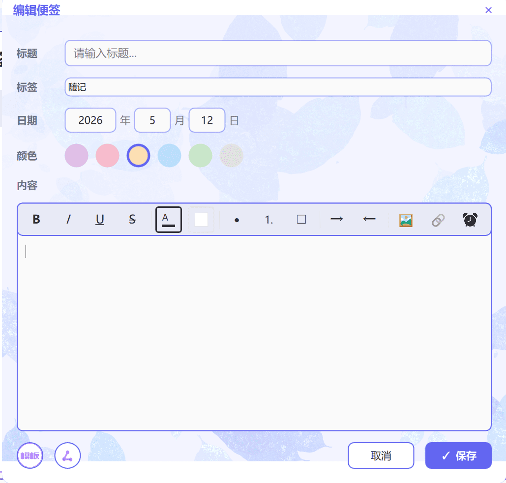
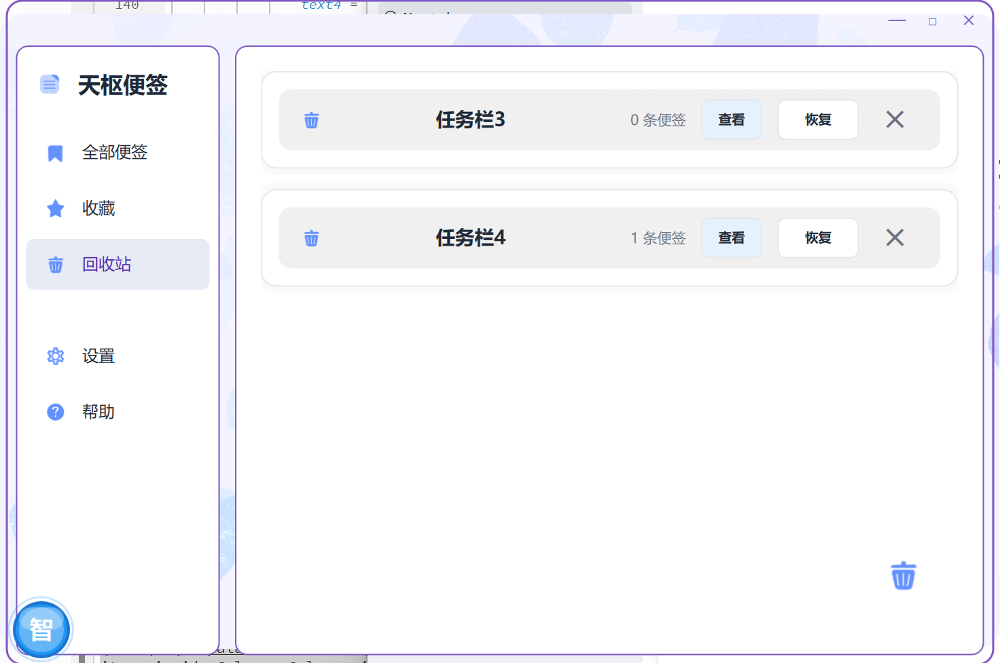
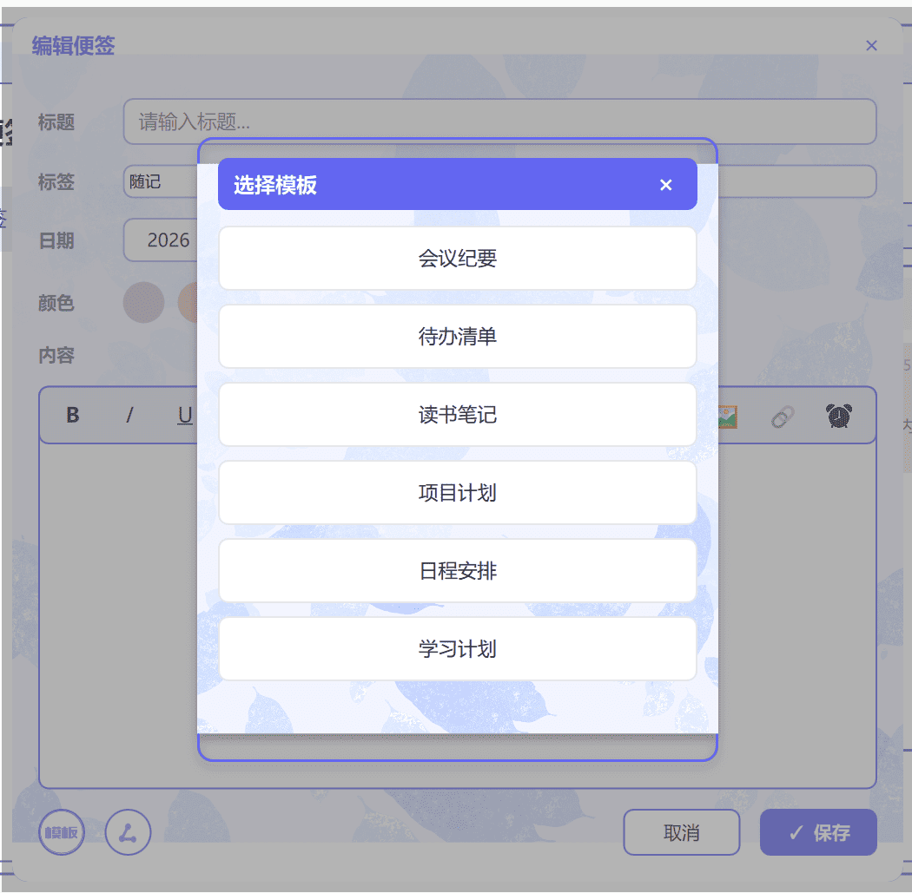
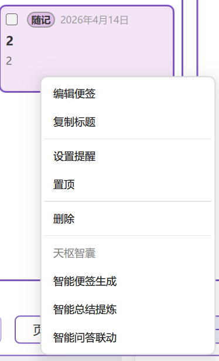
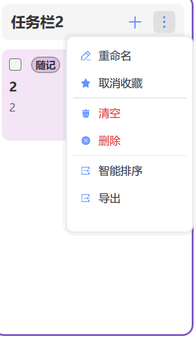
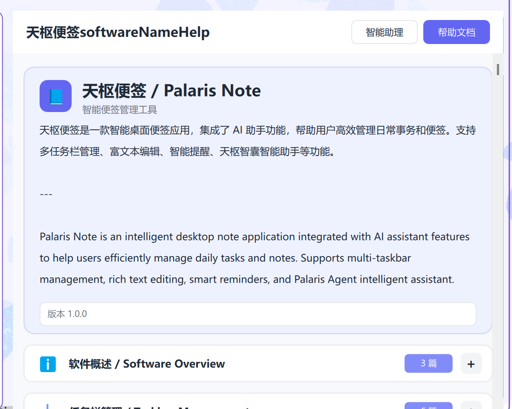

功能展示
全方位的功能体系
从便签管理到 AI 辅助，覆盖效率工具的方方面面
01
看板式便签管理
支持创建多个任务栏，以看板（Kanban）视图组织便签。每张便签支持分类标签、日期标记、收藏置顶，配合分页浏览与搜索功能，快速定位所需内容。
- 多任务栏看板布局
- 便签分类标签系统
- 收藏、置顶、搜索
- 回收站与恢复机制
02
AI 智能助手
内置"天枢智囊"AI 助手，提供智能便签生成、内容总结提炼、智能问答联动三大能力。右键菜单一键调用，让 AI 深度融入笔记工作流。
- 智能便签自动生成
- 内容总结与提炼
- 智能问答联动
- 天枢精灵帮助系统
03
收藏与回收系统
重要便签一键收藏，独立视图快速访问。误删内容进入回收站，支持查看与恢复操作，数据安全有保障。
- 独立收藏视图
- 任务栏级别收藏管理
- 回收站恢复机制
- 清空与彻底删除




04
个性化设置
支持浅色、深色、护眼三种主题模式自由切换；中英文双语一键切换；自定义快捷键配置，打造专属使用体验。
- 浅色 / 深色 / 护眼模式
- 中英文双语切换
- 自定义快捷键
- 设置即时生效
05
丰富的上下文操作
便签与任务栏均支持右键上下文菜单，提供编辑、复制、提醒、置顶、删除、智能排序、导出等快捷操作，AI 功能一键直达。
- 便签右键操作菜单
- 任务栏管理菜单
- AI 功能快捷入口
- 智能排序与导出



06
内置帮助与文档
内置"天枢精灵"智能助理与结构化帮助文档，新用户快速上手，老用户高效查阅。软件概述、任务栏管理等分类文档一应俱全。
- 天枢精灵智能助理
- 分类帮助文档系统
- 软件概述与功能介绍
- 版本信息与关于页面